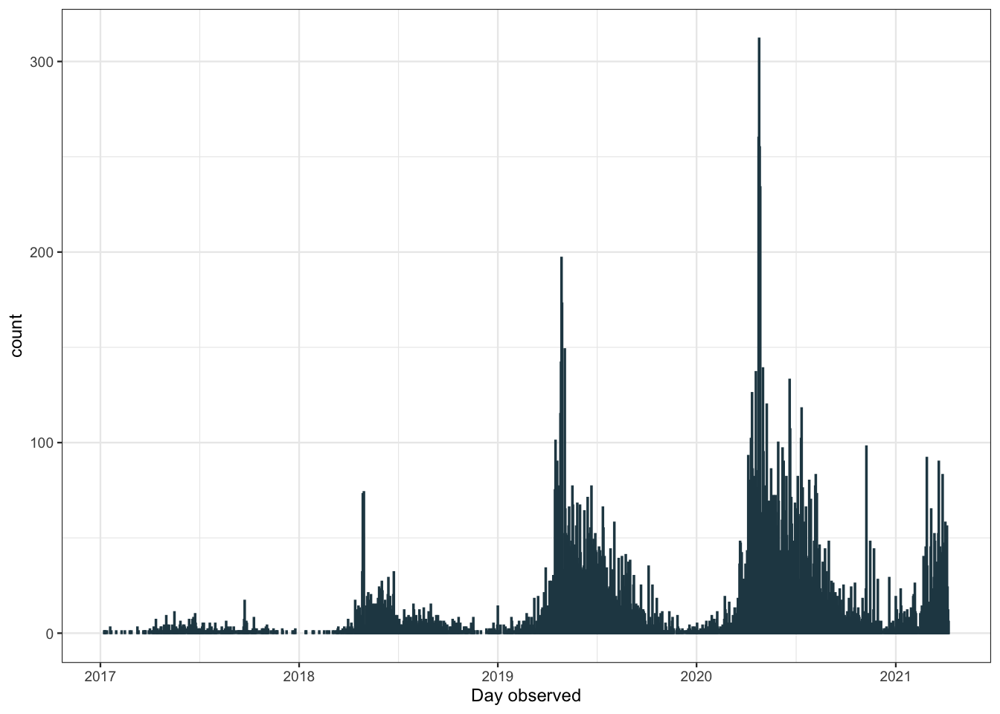
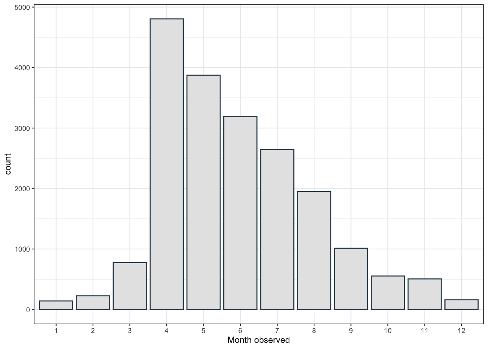
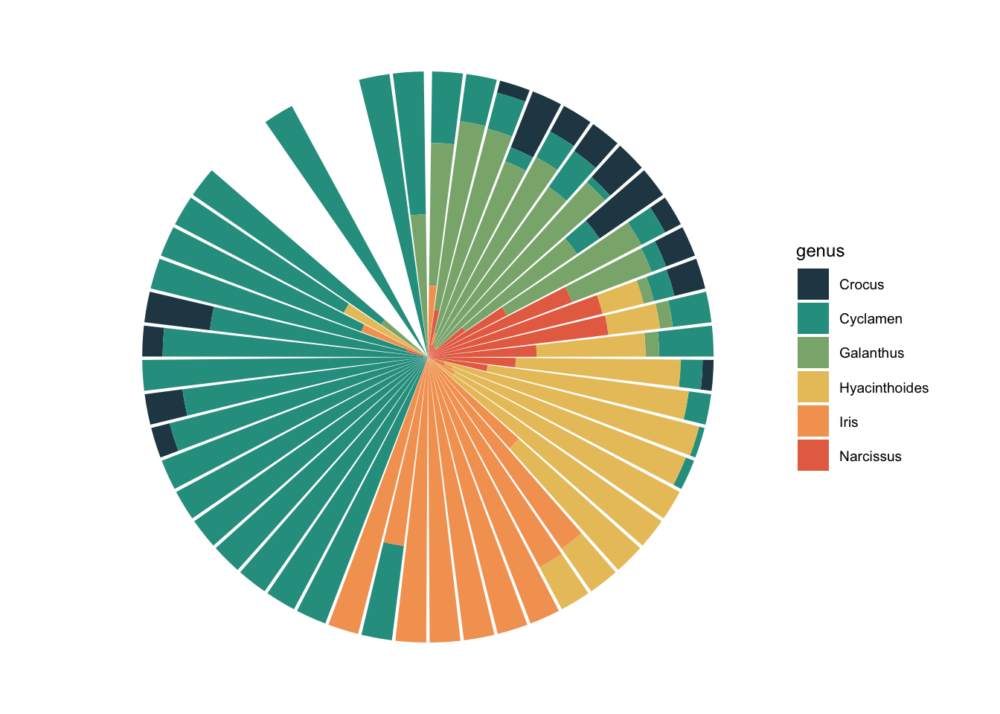
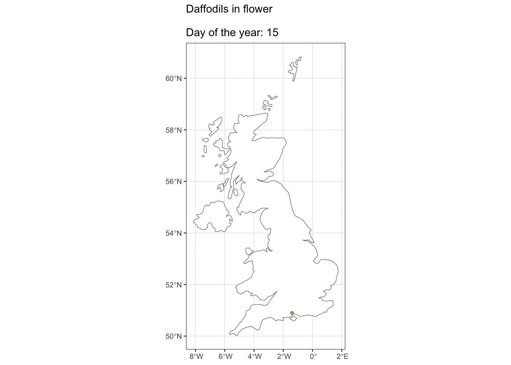

Searching for spring: how to get data from the iNaturalist API in R
![]()
iNaturalist is an online community where people can record and share observations. We have been using iNaturalist in our group for student projects. It’s proved a great way to teach how to collect and analyse data while the lab and field have been off-limits. To find a way to make data collection easier, I have been playing around with iNaturalist’s API.
It has been a long, dark winter for those of us under lockdown in the UK and to give myself something to look forward to, I decided to look into when we might expect to see the first Spring bulbs emerging.
iNaturalist does have a bulk download facility, but you can’t pull the data directly into R, and I want to filter the data by term_id, which is not an option when using the export facility.
I’m going to use functions from {httr} to query the API, and {jsonlite} to deal with the ugly json file that the API will return 🙅
library("tidyverse")
library("httr")
library("jsonlite")The API will only give us 200 records at a time, this is the max number of records per page, so I’m writing a function that I can use to repeatedly hit the server. The call I’m using includes filters to pull out the data I want to look at. Briefly, I’m filtering for observations of plants iconic_taxa=Plantae, in the UK place_id=6857, which have the annotations Plant Phenology term_id=12, and Flowering term_value_id=13. Annotations are a little different to Observation Fields in iNaturalist. Observation Fields can be created and added by anyone, whereas Annotations are maintained by iNaturalist administrators. This means I will probably pull fewer observations, but they might be more reliable.
Usually you’d use the page parameter to cycle through each page and retrieve all the results, however, if there are more than 10k results, iNaturalist recommends you sort by ascending ID order_by=id&order=asc, and use the id_above parameter set to the ID of the record in the last batch.
get_obs <- function(max_id){
# an API call that has "id_above =" at the end
call <- paste("https://api.inaturalist.org/v1/observations?
iconic_taxa=Plantae&term_id=12&term_value_id=13&place_id=6857
&d1=2017-01-01&per_page=200&order_by=id&order=asc&id_above=",
max_id, sep="")
# making the API call, parsing it to JSON and then flatten
GET(url = call) %>%
content(as = "text", encoding = "UTF-8") %>%
fromJSON(flatten = TRUE) -> get_call_json
# this grabs just the data we want and makes it a data frame
as.data.frame(get_call_json$results)
}Now that we have our function, I’m going to use it to pull the first page of results by setting max_id to zero. Once we’ve got that, we can create a list with our first page of results as the first item. I can then use a while loop to continually hit the API and append each new page to the list. The loop will run while the number of rows in a page is equal to 200. The last page of results will have less than 200 rows, and the loop will stop running. I’ve also told it to print the page number so I can see how it’s progressing, although I won’t print all that output in this post.
# get the first page
obs <- get_obs(max_id = 0)
max_id <- max(obs[["id"]])
thisisalist <- list(page_1 = obs)
page <- 1
while (nrow(obs) == 200) {
Sys.sleep(0.5)
page <- page + 1
page_count <- paste("page", page, sep = "_")
obs <- get_obs(max_id = max_id)
thisisalist[[page_count]] <- obs
max_id <- max(obs[["id"]])
print(page_count)
print(max_id)
}We can now bind all the elements of the list into one big dataframe and explore.
thisisnotalist <- bind_rows(thisisalist)
dim(thisisnotalist)[1] 21836 160There are a lot of different variables! I’m interested in observed_on. Let’s convert it to date format and do some quick overview plots.
thisisnotalist %>%
mutate(observed_on_date = as.Date(observed_on, "%Y-%m-%d"),
day_of_year = as.numeric(strftime(observed_on_date,
format = "%j")) ) -> flower_obs
flower_obs %>%
ggplot(aes(x = observed_on_date)) +
geom_bar(color = "#264653") +
scale_x_date(date_breaks = "1 year", date_labels = "%Y") +
labs(x = "Day observed")
The number of observations recorded has increased each year, probably due to iNaturalist gaining popularity. There are also many more observations in the summer months than in the winter. We can get a better look at this pattern plotting by month.
flower_obs %>%
filter(observed_on_details.year < 2021) %>% # we don't have the full data for this yr
ggplot(aes(x= as.factor(observed_on_details.month))) +
geom_bar(fill = "grey90", color = "#264653") +
labs(x= "Month observed")
There’s a peak in April with observations slowly dropping throughout the year. I didn’t quite expect that. I would have assumed that observations of flowering plants would be relatively flat from April to August as different plants come into flower at different points throughout the spring and summer. Perhaps this is due to some kind of sampling bias in how people are recording observations. Let’s have a look at which plants are the first to flower.
flower_obs %>%
group_by(taxon.name, taxon.preferred_common_name) %>%
summarise(median_day = median(day_of_year), n_obs = n()) %>%
ungroup() %>%
# filter to sp with more than 20 observations
# to make sure we get a representitive sample size
filter(n_obs > 20) %>%
slice_min(order_by = median_day, n = 15) %>%
knitr::kable()| taxon.name | taxon.preferred_common_name | median_day | n_obs |
|---|---|---|---|
| Petasites fragrans | Winter Heliotrope | 29.0 | 25 |
| Corylus avellana | common hazel | 43.0 | 37 |
| Crocus tommasinianus | Woodland crocus | 48.0 | 22 |
| Galanthus nivalis | common snowdrop | 50.0 | 208 |
| Cyclamen coum | Eastern Sowbread | 55.0 | 31 |
| Viburnum tinus | Laurustinus viburnum | 58.0 | 23 |
| Prunus cerasifera | Cherry-plum | 65.5 | 48 |
| Narcissus pseudonarcissus | wild daffodil | 68.0 | 30 |
| Viola odorata | Sweet violet | 71.0 | 64 |
| Draba verna | Common Whitlowgrass | 72.0 | 27 |
| Mercurialis perennis | Dog’s Mercury | 77.0 | 39 |
| Cardamine hirsuta | hairy bittercress | 77.5 | 40 |
| Narcissus | daffodils | 79.5 | 56 |
| Primula vulgaris | Primrose | 82.0 | 185 |
| Tussilago farfara | colt’s-foot | 82.0 | 91 |
I always think of Crocus coming up first, along with Snowdrops, so it’s reassuring to see them high up on this list. I think it would be nice to get a visualisation of the emergence of different flowers with the changing seasons. I’m going to choose a few which I know emerge fairly sequentially: Snowdrops (genus = Galanthus), Crocus, Daffodils (Narcissus), Hyacinths (Hyacinthoides), Iris, and finally Cyclamen, which flowers through the winter.
I have to do some fiddling around here with dates to get the x axis labels how I want them. I’m going to change the year for every observation to be 2020, so that data from different years can be grouped together. I also use floor_date from {lubridate} to round dates to the week they were observed. e.g. Tuesday 6th and Thursday 8th would both be rounded down to Sunday 4th. This allows me to plot by week and label by month.
library("lubridate")
flower_obs %>%
filter(str_detect(taxon.name, "Narcissus") |
str_detect(taxon.name, "Iris") |
str_detect(taxon.name, "Crocus")|
str_detect(taxon.name, "Galanthus")|
str_detect(taxon.name, "Hyacinthoides")|
str_detect(taxon.name, "Cyclamen")) %>%
separate(taxon.name, into = c("genus", "sp"), sep = " ") %>%
mutate(date = as.Date(paste(2020, strftime(observed_on, format = "%m-%d"),
sep="-")) ) %>%
mutate(week = floor_date(date, "week")) %>%
ggplot(aes(x= week, fill = genus)) +
geom_bar(position = "fill") +
scale_x_date(date_breaks = "1 month", expand = c(0,0),
date_labels = "%B", limits = as.Date(c("2020-01-01", "2020-12-31"))) +
coord_polar() +
scale_fill_manual(
values = c("#264653", "#2A9D8F", "#8AB17D",
"#E9C46A", "#F4A261", "#E76F51")) +
theme_void(base_size = 9)
I feel like this is a really nice one to use coord_polar() for. You can see how the months blend into each other, without a break at Dec/Jan. Narcissus flowering phenology is well represented here, you can see how it steadily increases to a peak and then dips down again.
But ok, what about if you live in Edinburgh, are you going to see Daffs on the same day as people in London? Maybe we can see how geography affects flowering observations.
We want {sf} to work with spatial features, {rnaturalearthdata} to get a map of the UK, {rnaturalearth} for functions to work with that data and, for fun, {gganimate}.
library("sf")
library("rnaturalearth")
library("rnaturalearthdata")
library("gganimate")
# get a map of the UK as a 'sf' polygon from the natural earth data
uk_map <- ne_countries(country = "united kingdom", scale = 'medium', returnclass = "sf")
# filter our data for daffodil observations
# and extract lattitude and longitude from the 'location' variable
flower_obs %>%
filter(str_detect(taxon.name, "Narcissus") & mappable == TRUE ) %>%
separate(location, into = c("lat", "long"), sep = ",") %>%
select("lat", "long", "day_of_year") %>%
st_as_sf(coords = c( "long","lat"),
crs = 4326, agr = "constant") -> geo_daff
ggplot() +
geom_sf(data = uk_map, fill = "white") +
geom_sf(data = geo_daff, shape = 16, size = 1.5,
colour = "#8AB17D") +
transition_states(as.factor(day_of_year),
state_length = 3) +
shadow_mark(past = TRUE, future = FALSE) +
ggtitle("Daffodils in flower\n
Day of the year: {closest_state}")
I was hoping we’d see some kind of wave with flowers appearing in the South first, but alas, maybe there’s just not enough data. It looks pretty cool though 🤷